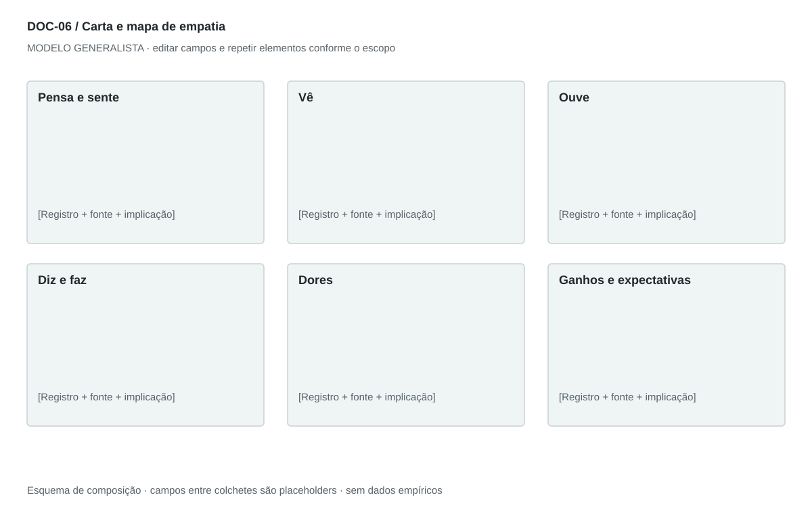

DOC-06 / Biblioteca documental generalista
Carta e mapa de empatia
Organizar perspectivas do cliente e transformar lacunas de entendimento em perguntas de pesquisa.
Modelo de investigação. Não representa uma análise concluída. Campos vazios devem permanecer identificados; não inventar dados para completar figuras.
Estrutura editorial
Relatório de 2–3 páginas com os sete domínios; mapa visual em uma página opcional. Carta em primeira pessoa pode ser um anexo, rotulado como síntese construída.
Visual previsto

Persona ao centro, quatro perspectivas ao redor e faixa inferior para dores, ganhos e expectativas. Cores apenas agrupam domínios, sem sugerir intensidade.
Imagens: Avatar neutro ou ilustração identificada como representativa; retrato não é necessário. Não associar uma pessoa real a falas inventadas.
Dicionário de dados
| Campo | Tipo | Dado necessário |
|---|
| persona_id | referencia | Perfil ao qual a perspectiva pertence |
| dominio | enum | pensa_sente, ve, ouve, diz_faz, dores, ganhos, expectativas |
| registro | texto | Observação, relato ou interpretação curta |
| natureza | enum | fala_literal, observacao, inferencia ou hipotese |
| contexto_coleta | texto | Situação, método e data da coleta |
| pergunta_validacao | texto | Pergunta aberta para reduzir a lacuna |
| implicacao | texto | Decisão de produto ou atendimento afetada |
Todos os registros precisam de classificação, fonte, localização, datas, confiança e limitação. Números também precisam de unidade, moeda quando aplicável e período.
Modelo preenchível
Os quadros amarelos podem ser editados nesta página para impressão. Edições não são gravadas automaticamente: use o Markdown/JSON para manter uma versão ou imprima em PDF após editar.
[Negócio] · [Versão] · [Data-base] · [Autor] · [Audiência] · [Território]
Pergunta decisória: [A preencher]
Escopo: [A preencher]
1. Pensa e sente
Registre preocupação, desejo e sentimento, distinguindo observação de interpretação.
[Análise + evidência + implicação + lacuna]
2. Vê
Contexto, alternativas e sinais que encontra no ambiente.
[Análise + evidência + implicação + lacuna]
3. Ouve
Fontes de influência e mensagens recebidas, sem inventar canais.
[Análise + evidência + implicação + lacuna]
4. Diz e faz
Separe falas literais autorizadas de comportamento observado.
[Análise + evidência + implicação + lacuna]
5. Dores
Obstáculos, riscos percebidos e custo de não resolver.
[Análise + evidência + implicação + lacuna]
6. Ganhos
Resultado desejado e critério usado para reconhecer sucesso.
[Análise + evidência + implicação + lacuna]
7. Expectativas e pesquisa
O que a oferta precisa demonstrar e o que ainda precisa ser perguntado.
[Análise + evidência + implicação + lacuna]
Decisão e próximo passo
[Decisão e justificativa]
[Alternativa considerada]
[Condição de reversão]
[Ação, responsável, prazo e critério]
Fontes e limites
[Fonte + localização + datas + o que sustenta + limitações]
Critérios de revisão
- Aspas só indicam fala literal com fonte; sínteses devem ser rotuladas.
- Desejo do cliente não é benefício comprovado do produto.
- Itens sem coleta real permanecem hipóteses.
Estudo do arquivo original
DOC-06-fonte.pdf — Três páginas retrato com sete seções: pensa/sente, vê, ouve, diz/faz, dores, ganhos e expectativas. Apesar do nome Empathy Letter, é um relatório estruturado em bullets, não uma carta em primeira pessoa. Frases representativas aparecem entre aspas sem evidência de entrevista identificada.
Observação do original e adaptação recomendada são camadas distintas. Nomes, preços, localidades, contatos e conclusões do caso-fonte não devem preencher a nova análise.